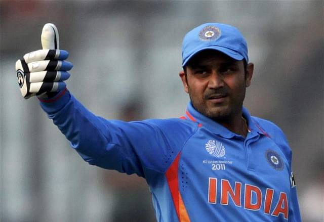
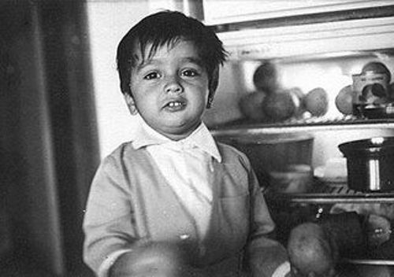
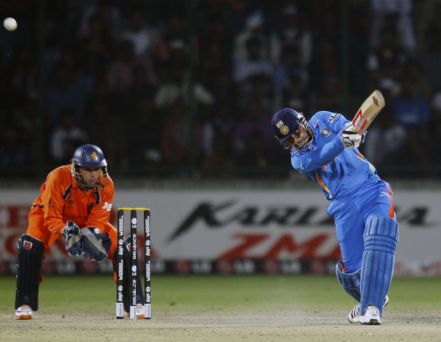
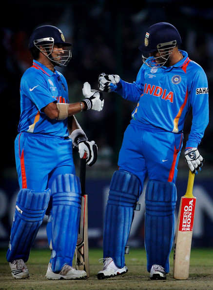
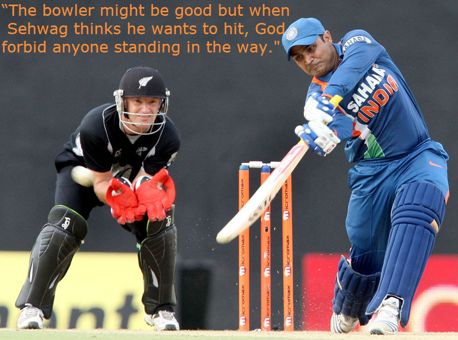

Overview
Everyone must be thinking why this page was so late in reporting the retirement of a man who can be said to have revolutionised the way cricket was played in India. The biggest reason for this perceived tardiness was the fact that we, ourselves were not able to beleive the news that the man who became an idol for many batsmen throughout the globe, had finally decided to hang up his boots. Many people might forget about this man but we, through this blog have tried to awaken some memories pertaining to his illustrious career. Here is a tribute to one of the best openers of our generation.
Early Life
Born in a Delhi jat family Sehwag was very keen about his cricketing career from the very beginning. Even though his father was in favour of ending his cricketing career after he broke his tooth, he still had the jeal to carry on. His mother reminds how Sehwag would hide his equipments at his childhood friend Ashish Nehra’s house and would begin practising as early as about 5 am every morning where he and Nehra would travel to play friendly matches. His coach speaks of how he used to tie Sehwag’s left leg so that his legs don’t drag while he was hitting the cover drive.
His Achievements
He was primarily considered as an ardent follower of Sachin Tendulkar whom he also looked up to as an opener. His opening pair with Sachin is still considered one of the best opening pairs in the history of international cricket. Sachin, one of the greatest batsman of all time spoke about him as
"I have to learn from Sehwag how to play in the nervous 90's."
Virender Sehwag in 2005 was considered by ‘WISDEN CRICKETER’S ALMANAC’ as ‘the most exciting opener’ due to his excuisive shot making capabilities and remarkable strike rate being only less than Adam Gilchrist and Shahid Afridi in test matches. The records held by him are innumerable, the best being the only Indian to score a triple century that too twice with his highest being 319 against South Africa, one of the major strengths of the game. He is also the second cricketer in the world to score a double century in ODI’s only after Sachin Tendulkar. He is also considered to be the inventor of the Upper cut shot in which he would hit a bouncer(something the fast bowlers could use to scare a batsman) over the keeper for a boundary, which made the fast bowlers wonder in surprise. Brett Lee, one of the feared bowlers of his time speaks on him:-
"No matter how good and experienced you are, he can kill your attitude."
The records held by him are innumerable the best being the only Indian to score a triple century that too twice with his highest being 319 against South Africa, one of the major strengths of the game. He is also the second cricketer in the world to score a double century in ODI’s only after Sachin Tendulkar. He is also considered to be the inventor of the Upper cut shot in which he would hit a bouncer(something which bowlers used to scare batsman) over the third man for a boundary which made the bowlers stare in surprise. He has also scored the fastest triple century and fastest 250 in terms of balls faced which gives us a fair idea of the kind of batsman he was.
Concluding Note
As he retires, Indians can’t forget his contribution in ICC T20 WORLD CUP 2007 and the ICC WORLD CUP 2011 where India were crowned champion. Let whatever be the situation he would be remembered as one who has never been influenced by the situation, rather he would play his own way humiliating great bowling attacks with his aggressive batting. It’s truly said Virender Sehwag was the entertainer and with his retirement the era of India’s dominant batting line up of early 21st century came to an end. Ramiz Raja speaks on him as:-
"When Viv Richards retired I thought it was end of entertainment. But then came Sehwag the king of entertainment."